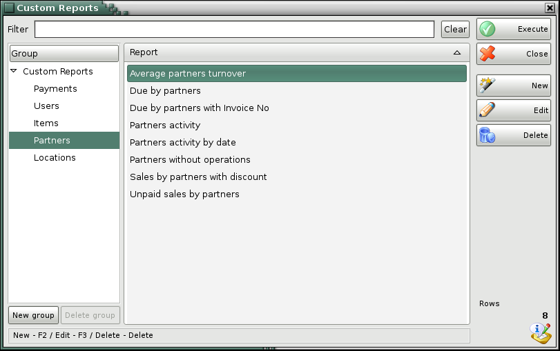
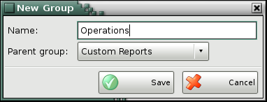

Custom Reports
Custom Reports are individuals reports, depending on the needs of each client. After being created these reports appear in the Custom Reports menu and not differ from the standart reports.
The advantages of custom reports are their indipendance from the main reports. They can be created on the individual requirements of the clients and to include situations which are not foreseen in the basic product, but are useful for a specific activity.
To open the Custom Reports module select Reports->CustomReports->Edit Reports menu.
To create a new report use New button. To edit an existing report select the report and press Edit button. Use Delete button to delete a report and Close button to exit the window. Run button loads the report.

To create a new report group use New group button under the Groups section. You can drug and drop the reports from one group to another using the mouse or directly choose the group while saving the report.

Once the reports are created, a regular user can start working with them. When a user does not have a permission to use the Report Designer, Edit Reports menu will not be present for him. This way the user interface is safe from accidental changes and the confusion for users that do not need this functionality is minimized.
�2006-2015 Microinvest, All rights reserved